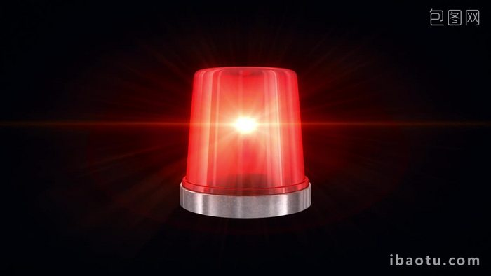

준비가 끝나고 본격적인 전시 설치 시작. 스포하자면 뒤질뻔했음. 당연함 건강 상태 최악. 멘탈 상태 최악. 최악이라 최악. 트리플 풀 콤보. 그래도 재밌었습니다 나름. 교수님이 일찍 온 사람들 커피도 사주고...(사실상 각성제) 데면데면 인사만 하던 수업 사람들과 친해지고...아 개웃겼던 거 하나 있음. (근데 아마 나만 웃기고 님들은 안 웃길 거임) 막판에 거의 밤 열 한 시 다 돼서 교수님이랑 친구 두 명이랑 쓰레기 버리러 지하 주차장으로 내려갔음...재활용 쓰레기 처리장을 찾아야 하는 퀘스트였음...큰 구르마에 상자 우리 키만큼 높게 쌓아가지고...양팔에 또 박스 더미 끼고...그러고 가는데 엘베가 없어서 주차장 안 차도로 갔단 말임? 중간쯤 내려가는데 갑자기
하늘이 개벽하며 사이렌이 울림. (소리 개컸다는 뜻)
두 명 구르마에 붙어있고 나랑 교수님은 양팔에 짐 끼고 있고 넷이서 그 상태로 패닉 옴ㅋㅋㅋㅋ(걍 차도에 사람 잡혀서 울린 경보음일텐데 다들 하루종일 중노동해서 제정신 아니었던 듯) 한 10초 우왕좌왕 함...걍 내려가면 되잖아 불가사리들아;;;;;; 허둥지둥하다가 교수님이랑 눈 마주쳤는데 그때 그 분 표정이 너무 웃겨가지고 쓰레기장 찾아서 버리고 올라올 때까지 웃었음...넷이 서로 겁나 웃음...
이러고 올라와서 멍하니 다른 마무리 작업 돕다가 너는 오전 타임인데 왜 아직까지 일하고 있냐 꾸짖을 갈! 당하고 정신 차려서 나옴 (억지로 있었던 게 아니라 개인 디피 때문에 시간 늘어진 김에 다른 학생들 도와주던 차였음). 다행히 막차를 놓치지 않았어요. 쓰레기 버리고 하기 전에도 막 무지 갔다 오다 실신할 뻔 해서 길바닥에 주저 앉고 (실화임) 뭐 많은 일이 있었는데 사실 그리 기억이 잘 안 나서 이 정도로 넘기겠습니다. 읽는 당신도 피곤할 듯. 졸전은 악마의 의식입니다...악마가 소환되는 대신 내가 지옥으로 끌려가는...근데 반쯤은 내 업보인. 그래서 최대한 불평불만 안 하려고 노력했는데 잘 지켰는지는 모르겠다...
그러고 나서부터 조금 컨디션을 회복해서 즐거운 전시 기간을 보냈던 것 같습니다. 뭘 어떻게 정리해서 후기를 써야할지 모르겠네? 음. 날짜별 일화를 쓰기에는 너무 구구절절쑈쑈쑈가 될 것 같으니 과목별로 정리해서 구구절절쑈 정도로 만들어보겠음. 와 지금 다 쓰고 돌아왔는데 진짜 구구절절임. 시간 많은 사람만 보세요
일단 졸전 과목 세 개...한계치를 시험하는 경험이었고 나 스스로에게 정말 많이 실망했음. 그래도 그 과정에서 부족한 점을 알고 앞으로 이런 단점을 어떻게 보완할지 등...깨달은 게 많은 것 같아 후회는 없다. 학기 초 상태 생각해보면 다 완성한 게 기적임.